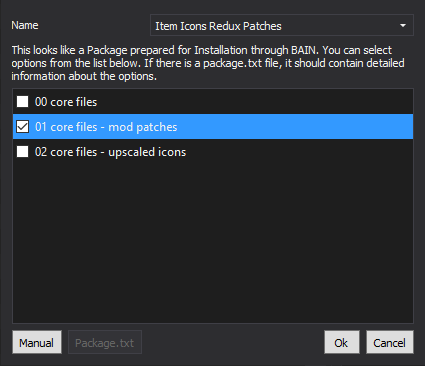

Creating a New Profile:
In order to keep a full installation of other modules handy, we will create a copy of the profile:
- Click the
 button on the top bar of MO2
button on the top bar of MO2 - Click on the profile of the most recent module you installed and select Copy
- Input Viva New Vegas - Gameplay for the new name then click OK
- Select the Viva New Vegas - Gameplay profile from the profile drop-down
Creating a Separator in Mod Organizer 2
- Right-click in the left pane of MO2 and select Create Separator
- Input Gameplay into the pop-up and select OK
- Create another separator below that called PTWB's Mods
JSawyer Ultimate Edition
Install normally
Manual tweaking available:
- Run the game and exit at the main menu
- Back in MO2, double-click on the Overwrite folder at the bottom of the left pane
- Drag the Config file from the overwrite into the JSawyer Ultimate Edition mod in the left pane
- Double-click on JSawyer Ultimate Edition in the left pane of MO2
- In the INI-Files tab, select Config/JSawyer Ultimate.ini
- Many of the mod's features can be tweaked here
- I recommend changing the following options:
- Set fChanceAidLoot to 80 (line 14)
- Set fChanceAmmo to 80 (line 16)
- Set fChanceChemsLoot to 80 (line 19)
- Set fChanceDrinksLoot to 80 (line 21)
- Set fChanceFoodLoot to 80 (line 23)
- Set fChanceMagazines to 80 (line 25)
- Set bExpandedKarmaEdits to 1 (line 29)
- Set bLowerXPRewards to 1 (line 31)
- Set bOverrideGamesettings to 1 (line 32)
- These settings will generally make the game more difficult, as valuable items will be less common and leveling will be slower. They may not be for everyone
- Updated/fixed/improved version of the original JSawyer mod, which was made by the lead director of Fallout New Vegas, Josh Sawyer. Think of it as a "directors cut" mod
NOTE: This mod is meant to be played on normal/hard difficulty
JSUE Addendum
Install normally
- Balance changes/fixes for JSawyer Ultimate Edition. See the included read-me for details
Economy Overhaul
Install normally
- Overhauls value of items, repair costs, amount of vendor caps, casino outputs, and the usability of the barter skill
Economy Overhaul Addendum
Install normally
- Adjusts a few prices/rewards to better match Economy Overhaul's pricing. See the included read-me for details
Mojave Arsenal
Install normally
- Adds ammo crafting parts to leveled lists, adds recipes for all ballistic ammo types, and integrates GRA into the base game
Item Icons Redux Patches
FOMOD instructions:
- Patches for Item Icons Redux and JSawyer Ultimate Edition/Mojave Arsenal. Only needed if you installed Item Icons Redux from Core - HUD/UI
Mojave Wildlife
Files to install normally:
- Main File - Mojave Wildlife - Vanilla No Chanced Spawns Version
- Adds hundreds of new creature spawn points in a non-save corrupting way
Mojave Raiders
Files to install normally:
- Main File - Mojave Raiders
- Optional File - Mojave Raiders - .22LR Varmint Rifle Patch
- Optional file only needed if you installed JSawyer Ulimate Edition, or another mod that restores the .22LR varmint rifle
- Overhauls the raider factions by balancing their loot and adding more of them to fight
Mojave Raiders Addendum
Install normally
- Balance changes/fixes for Mojave Raiders. See the included read-me for details
Character Expansions Revised - Mojave Raiders Patch
Files to install normally:
- Optional File - Character Expansions Revised - MR
- Fixes conflicts between Character Expansions Revised and Mojave Raiders
NOTE: Only install if you installed Character Expansions Revised from the Visuals module
JSawyer Ultimate Edition Patches
Files to install normally:
- Main File - JSawyer Ultimate - Mojave Raiders Patch
- Main File - JSawyer Ultimate Edition - Mojave Arsenal Patch
- Patches for JSUE and Mojave Arsenal/Mojave Raiders
Follower Tweaks
Install normally
Manual FNVEdit editing required:
- Run FNVEdit through MO2
- Right-click in the Module Selection pop-up and click Select None
- Check the box adjacent to Follower Tweaks.esp then hold down left shift and click OK
- Wait for the message Background Loader: finished to appear in the right pane
- Expand the Follower Tweaks.esp header in the left pane
- Right-click on the Creature header and select Remove
- Removes the changes to Ed-E that could cause his audio messages not to play
- Save and exit
- Tweaks various annoying/overpowered aspects of companions, mostly their perks